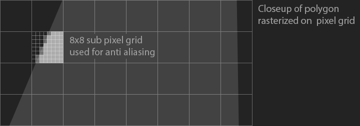
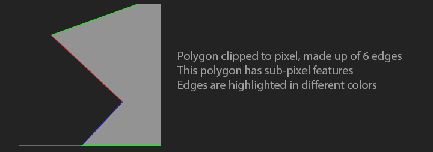
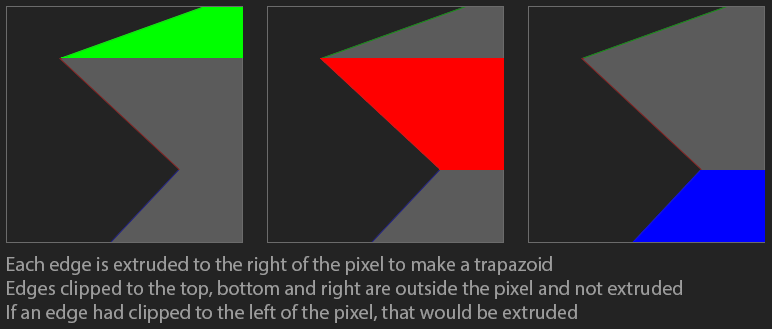
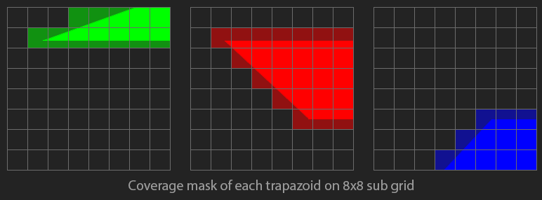

A-Buffer Anti Aliasing
In this section we're going to implement a variation of Loren Carpenter's A-Buffer algorithm. Check out Alan Bucior's blog for an alternate implementation.
To draw an anti-aliased polygon, clip the entire polygon to each pixel it covers, then calculates the area of the clipped polygon. An A-Buffer typically stores the coverage of each pixel in a 4x8 sub-pixel grid. In this blog, we will be greating an 8x8 sub-pixel grid.
The A-Buffer is a lookup table, not a large render target like you might expect. The reason i chose to use an 8x8 sub-pixel size is becuase we can use a uint64 to store one bit for each cell in an 8x8 grid. The A-buffer is a unique lookup table that is indexed by two points on an 8x8 grid. The value at each index is a uint64 which is an 8x8 grid with each cell containing one bit of coverage (covered by the polygon or not). To understand why the lookup table is indexed by two points, let's explore how we can de-compose a polygon into trapazoids.
Let's say we have a polygon that's already clipped to a pixel, as shown below. The square is one pixel, this polygon's corners can not be rendered, since they are sub pixel in size.
We're going to take each edge of the polygon and flood fill to the right. This should leave us with a number of trapazoids. Notice how edges clipped to the top, bottomom, and right don't flood fill anywhere. Those lines are above the pixel, they don't intersect the pixel. If an edge had clipped to the left of the pixel, that would fill to the right.
Now, let's assume the pixel is made up of an 8x8 sub-grid. We can mark each pixel of the sub-grid as covered by the trapazoid or not. This is the coverage mask. Each pixel stores this coverage mask as a uint 64.

We can use the above trapazoids to re-create the polygon. If we XOR all the grids together, the resulting grid contains the original polygon. Because we use XOR, trapazoids that overlap should be handled correctly as well. Since XORing the trapazoids together yields the original polygon, XORing their coverage masks together yields the coverage mask of the original polygon.
The A-Buffer algorithm:
- For each scan-line
- Clip the polygon to the scanline
- For each pixel in scan line
- Clip the clipped polygon to the pixel
- Initialize pixel coverage to 0
- For each edge in the clipped polygon
- Look up the edge in global coverage mask
xorthe coverage mask with pixel coverage
- Pixel Opacity = number of bits in pixel coverage / 64
Implementation
We're going to be oversampling by a factor of 8, so every pixel is subdivided with an 8x8 grid. We can store the entire grid in a single uint64_t, where each bit represents the boolean coverage of a pixel. We have 4096 unique 8x8 grids. Let's implement get and set helper functions to retrieve or modify a bit in the uint64_t using an x and y coordinate.
// 64 x 64 = 4096. Each of the 4096 unsigned integers is an 8x8 grid
uint64_t CoverageTable[64][64];
void SetPixelInBitset(uint64_t& bitset, int x, int y) {
unsigned int bit = y * 8 + x;
bitset |= (uint64_t(1) << bit);
}
bool GetPixelInBitset(uint64_t& bitset, int x, int y) {
unsigned int bit = y * 8 + x;
return (bitset & (uint64_t(1) << bit)) != 0;
}
The code for building the coverage table is verbose, but most of it is for drawing lines. The below function draws a line for every unique x and y combination in an 8x8 grid. After the line is drawn, a second pass flood fills any line to the right edge of the image.
void InitCoverageTable() {
// Draw lines
for (int outer = 0; outer < 64; ++outer) {
for (int inner = 0; inner < 64; ++inner) {
CoverageTable[outer][inner] = 0;
int x0 = outer % 8;
int y0 = outer / 8;
int x1 = inner % 8;
int y1 = inner / 8;
int dx = abs(x1 - x0);
int dy = abs(y1 - y0);
int xStep = x0 < x1 ? 1 : -1;
int yStep = y0 < y1 ? 1 : -1;
int error = 0;
if (dx > dy) {
int m = 2 * dy;
int scale = 2 * dx;
for (int x = x0, y = y0; x != x1 + xStep; x += xStep) {
SetPixelInBitset(CoverageTable[outer][inner], x, y);
error += m;
if (error >= dx) {
y += yStep;
error -= scale;
}
}
}
else {
int m = 2 * dx;
int scale = 2 * dy;
for (int y = y0, x = x0; y != y1 + yStep; y += yStep) {
SetPixelInBitset(CoverageTable[outer][inner], x, y);
error += m;
if (error >= dy) {
x += xStep;
error -= scale;
}
}
}
}
}
// Flood fill right
for (int outer = 0; outer < 64; ++outer) {
for (int inner = 0; inner < 64; ++inner) {
for (int y = 0; y < 8; ++y) {
bool fill = false;
for (int x = 0; x < 8; ++x) {
if (fill) {
SetPixelInBitset(CoverageTable[outer][inner], x, y);
}
if (GetPixelInBitset(CoverageTable[outer][inner], x, y)) {
fill = true;
}
}
}
}
}
}
To retrieve the coverage of each pixel, we start by clipping the polygon against the pixel. After the polygon is clipped, loop trough all contours of the clipped polygon.
unsigned char GetCoverage(const Polygon& poly, const Point& point) {
BoundingBox pixel {
Point { (float)((int)(point.x)), (float)((int)(point.y)) },
Point { (float)(int(point.x) + 1), (float)(int(point.y) + 1) }
};
Polygon clipped = ClipPolygon(poly, pixel);
uint64_t coverage = 0;
for (int contour = 0, numContours = (int)clipped.size(); contour < numContours; ++contour) {
const Contour& c = clipped[contour];
for (int point = 0, numPoints = (int)c.size(); point < numPoints; ++point) {
const Point& p = c[point];
const Point& n = c[(point + 1) % numPoints];
We're going to use the start / end points of each line that makes up a polygon as a lookup into the coverage table. If a line was clipped against the bottom, top or right border, it can be ignored.
// Dont count if on the border of bottom
bool p_on_edge = fabsf(pixel.max.y - p.y) < 0.0001f;
bool n_on_edge = fabsf(pixel.max.y - n.y) < 0.0001f;
if (p_on_edge && n_on_edge) {
continue;
}
// Dont count if on the border of top
p_on_edge = fabsf(pixel.min.y - p.y) < 0.0001f;
n_on_edge = fabsf(pixel.min.y - n.y) < 0.0001f;
if (p_on_edge && n_on_edge) {
continue;
}
// Dont count if on the border of right
p_on_edge = fabsf(pixel.max.x - p.x) < 0.0001f;
n_on_edge = fabsf(pixel.max.x - n.x) < 0.0001f;
if (p_on_edge && n_on_edge) {
continue;
}
The start and end points need to be brought into the 8x8 sub-grid space before they can be used to look up coverage. Once the points are in the correct space, create an index, and XOR the coverage mask with the existing coverage. Once all edges are processed, the resulting coverage will range from 0 to 63. Normalzie this coverage to get an alpha value.
float p0x = (p.x - pixel.min.x) * 7.0f;
float p0y = (p.y - pixel.min.y) * 7.0f;
float p1x = (n.x - pixel.min.x) * 7.0f;
float p1y = (n.y - pixel.min.y) * 7.0f;
int p0_index = int(p0y) * 8 + int(p0x);
int p1_index = int(p1y) * 8 + int(p1x);
coverage ^= CoverageTable[p0_index][p1_index];
}
}
float alpha = float(std::bitset<64>(coverage).count()) / 63.0f;
return (unsigned char)(alpha * 255);
}
We can use this GetCoverage function to write a trivial render loop. Like before, we will be iterating over every pixel in the polygons bounding box. Find the coverage for each pixel, and set the pixel color accordingly. You can speed this up by checking if the polygon clipped to the pixel has only four edges, and if it does, check the area. If the area is 64x64, the pixel can be fully shaded without needing to find it's coverage.
void DrawPolygon(int _x, int _y, const Polygon& poly, unsigned char r, unsigned char g, unsigned char b) {
BoundingBox bbox = GetBoundingBox(poly);
int s_x = bbox.min.x < 0.0f ? bbox.min.x - 0.5f : bbox.min.x + 0.5f;
int e_x = bbox.max.x < 0.0f ? bbox.max.x - 0.5f : bbox.max.x + 0.5f;
int s_y = bbox.min.y < 0.0f ? bbox.min.y - 0.5f : bbox.min.y + 0.5f;
int e_y = bbox.max.y < 0.0f ? bbox.max.y - 0.5f : bbox.max.y + 0.5f;
for (int y = s_y; y <= e_y; ++y) {
for (int x = s_x; x < e_x; ++x) {
unsigned char alpha = GetCoverage(poly, Point{ (float)x + 0.5f, (float)y + 0.5f });
if (alpha != 0) {
DrawPixel(x + _x, y + _y, r, g, b, alpha);
}
}
}
}